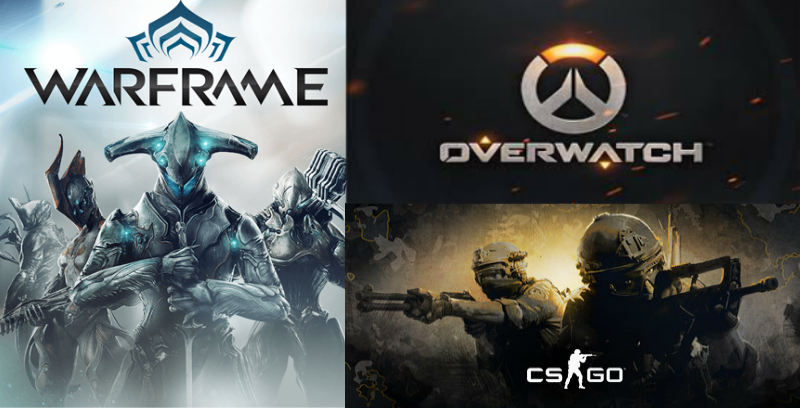
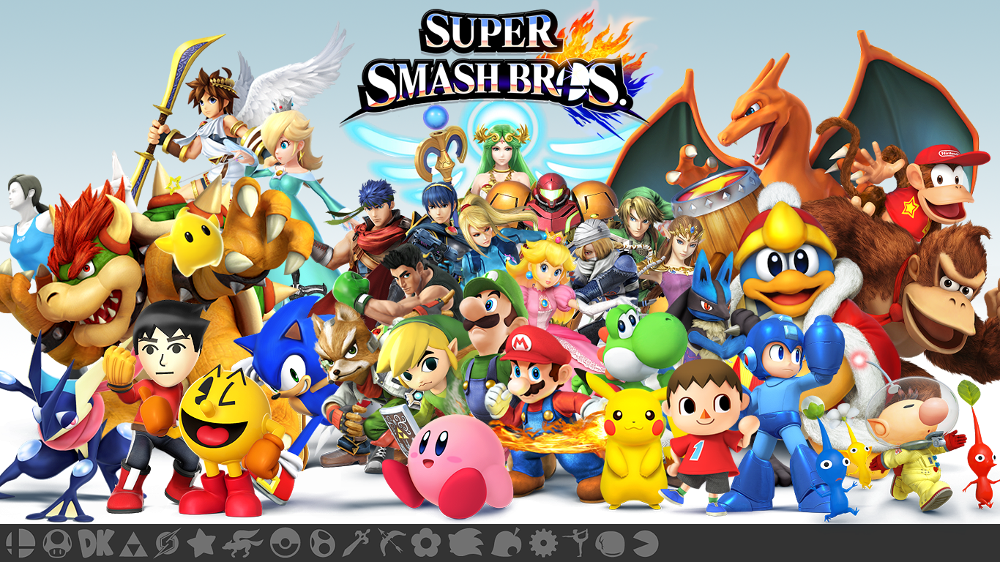
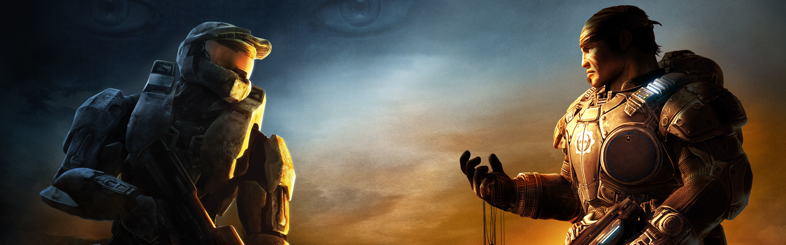

Video Games
 As I've stated before, I'm a major nerd. Especially when it comes to gaming. My first system was a Gameboy that I got when I was around 5 years old. I remember playing Pokémon Sapphire into the night until my Mom would come yell at me to go to bed. I play both PC and Console making me one of the moderate voices in the PC vs. Console debate. My gaming name is a bit different on different platforms, but it's usually along the lines of 'Boomer' or 'Boomz'. It came from my love of explosions in video games back when I was around 8, so I named myself 'boomer0120', the 0120 being my birthday(January 20th).
As I've stated before, I'm a major nerd. Especially when it comes to gaming. My first system was a Gameboy that I got when I was around 5 years old. I remember playing Pokémon Sapphire into the night until my Mom would come yell at me to go to bed. I play both PC and Console making me one of the moderate voices in the PC vs. Console debate. My gaming name is a bit different on different platforms, but it's usually along the lines of 'Boomer' or 'Boomz'. It came from my love of explosions in video games back when I was around 8, so I named myself 'boomer0120', the 0120 being my birthday(January 20th).
PC

Last year, a friend of mine helped me build my own PC, and I've been playing a lot more PC games ever since. I have many games, but have mainly been playing CS: GO, Warframe, and Overwatch lately. I've been playing CS: GO the longest, but play it casually, sometimes with friends. Warframe was my grind game, I spent many hours getting to where I am, which is of fairly high skill level. I only just got Overwatch, so I'm still bad at it, but I've been having fun with it.
My steam name is boomer0120
Wii U

I have several Wii U games, but by far my favorite and most played is Super Smash Bros. I got way to into this game, ultimately getting pretty good at it. I only stopped playing recently, but at my peak I was probably good enough to compete and do decent in a major tournament, if Colorado had any. I also love the Zelda games, and really looking forward to the upcoming game.
My NNID is Boomer0120
3DS
 I love the Pokémon games, and have been playing a decent amount of Pokémon Moon since its release. Pokémon was my childhood, and I've gained so much knowledge about the Pokémon universe it's kind of sad. I also play the 3DS version of Sm4sh on my 3DS, as well as some Zelda games.
I love the Pokémon games, and have been playing a decent amount of Pokémon Moon since its release. Pokémon was my childhood, and I've gained so much knowledge about the Pokémon universe it's kind of sad. I also play the 3DS version of Sm4sh on my 3DS, as well as some Zelda games.
My favorite online Pokemon battle simulator
Xbox One

I only just got an Xbox One a few weeks ago, but I used to play a lot of Xbox 360 back in the day too. My favorite series are probably Gears of War and Halo, both of which I've poured a lot of hours into.
My gamertag is Boomz120
Favorite Characters

What am I Watching Right Now?
What am I Playing Right Now?